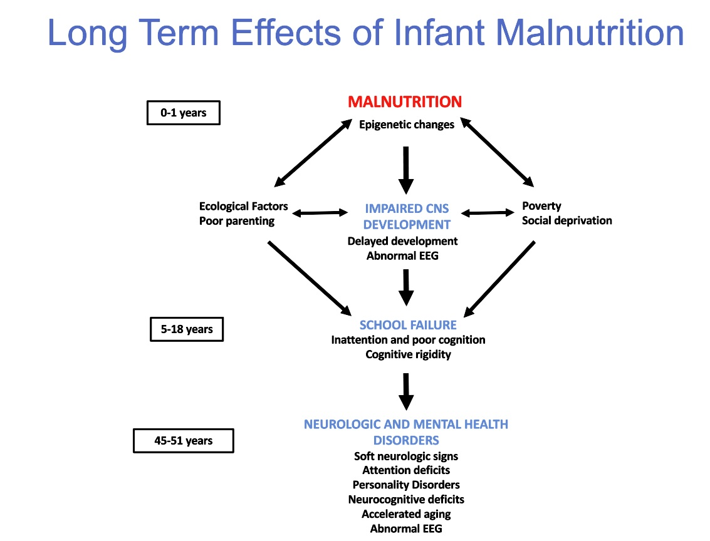
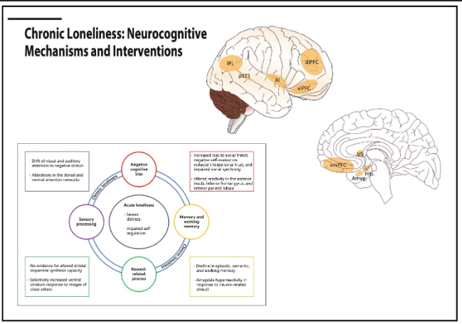

Overview
In response to the COVID-19 pandemic and mounting evidence which has failed to bring consensus to our understanding of long-term impacts on mental health and brain function, across cognitive domains the Global Brain Consortium established a working group on COVID-19-Induced Brain Dysfunction (CIBD) in 2021. During the inaugural expert meeting in the context of the Annual GBC assembly, it became clear that CIBD and the associated impairments represent the endpoint of different disease pathways. With an estimated one in ten individuals suffering from ‘Long COVID’ conditions according to the recent WHO definition it is imperative to disentangle neurobiological, psychological, and social factors to warrant an effective population-level management of CIBD and to facilitate the development of efficacious scalable interventions. The second expert meeting in the context of the annual GBC meeting 2023 further emphasized that despite an avalanche of isolated research endeavors the findings on CIBD provided inconsistent coverage of demographic and societal factors as well as analytic approaches, leading to considerable variation in the identified pathological endpoints and underlying mechanisms.

Goals
To reduce the strain on health systems worldwide and to inform the development of scalable and personalized interventions the meeting issued a call for action to promote international collaborations that leverage open science and large-scale data strategies. As an initial step the GBC CIBD working group initiated a task force that will develop and validate qEEG and computerized testing for CIBD and establish a consortium of leaders worldwide to share neuroimaging data and facilitate the robust and replicable determination of MRI-based brain structural signatures for CIBD and identify risk-resilience factors, pathological trajectories, and intervention targets for Neurotechnologies.
The GBC CIBD is inherently a global endeavor, aiming to credit data contributors in the authors list of our joint publications and welcoming engagement in the annual GBC meetings. Researchers are invited to participate by identifying neuroimaging data cohorts on which a common protocol Access can be implemented via sending raw data or with analytic and quality control pipelines. Aggregated data and outputs will be shared, openly where possible. High powered results will accelerate the return of findings to the Global Community. Furthermore, the researchers can participate in the common protocol/analytics development if desired.
To join the GBC CIBD project please contact us via contact@neuroinformatics-collaboratory.org and we provide the memorandum of understanding (MOU) and details on data processing and different levels of getting engaged.
Selected Publications
- Valdes-Sosa PA, Evans AC, Valdes-Sosa MJ, Poo M (2021) A Call for international research on COVID-19-induced brain dysfunction. National Science Reviews 8:nwab190
- Morr M, Liu X, Hurlemann R, Becker B, Scheele D (2022) Chronic loneliness: Neurocognitive mechanisms and interventions. Psychotherapy and Psychosomatics 91:227-237
- Klugah-Brown B, Yu Y, Hu P, Agoalikum E, Liu C, Liu X, Yang X, Zeng Y, Zhou X, Yu X, Rypma B, Michael A, Li X, Becker B, Biswal B (2022) Effect of surgical mask on fMRI signals during task and rest. Communications Biology 5: 1004
- Zhou X, Wu R, Zeng Y, Qi Z, Ferraro S, Yao S, Kendrick KM, Becker B (2022) Choice of Voxel-Based Morphometry processing pipeline drives variability in the location of neuroanatomical brain markers. Communications Biology 5:913
- Li, M., Wang, Y., Lopez-Naranjo, C., Hu, S., Reyes, R.C.G., Paz-Linares, D., Areces-Gonzalez, A., Abd Hamid, A.I., Evans, A.C., Savostyanov, A.N. and Calzada-Reyes, A., 2022. Harmonized-Multinational qEEG norms (HarMNqEEG). NeuroImage, 256, p.119190.